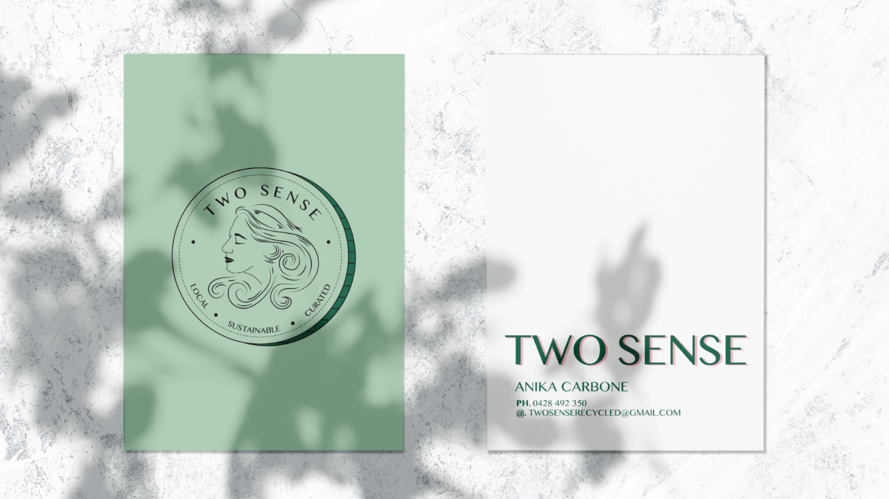
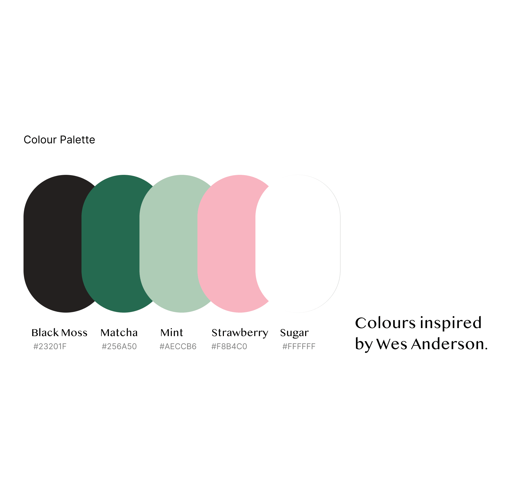
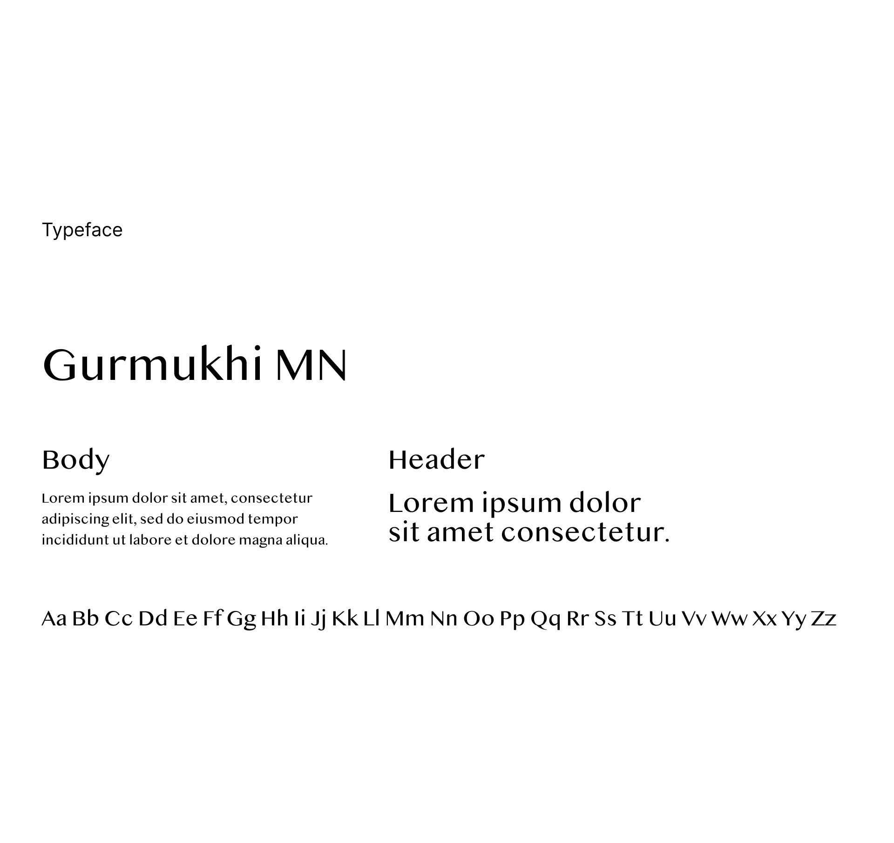
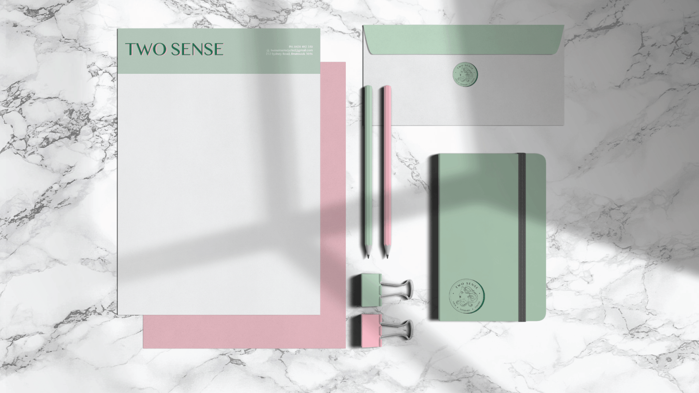

Two Sense, the label, represents a contemporary interpretation of vintage fashion. The brand's narrative revolves around two sisters joining forces -- the name pays homage to their father's famous saying, as they always contributed their "two cents".

Two Sense captures the essence of contemporary vintage fashion through a brand identity that feels both timeless and fresh. The coin illustration at the heart of the logo is a nod to the "two cents" etymology -- detailed, crafted, and full of character.



Open to freelance, contract, and full-time opportunities.
josephine.de.maria@gmail.com